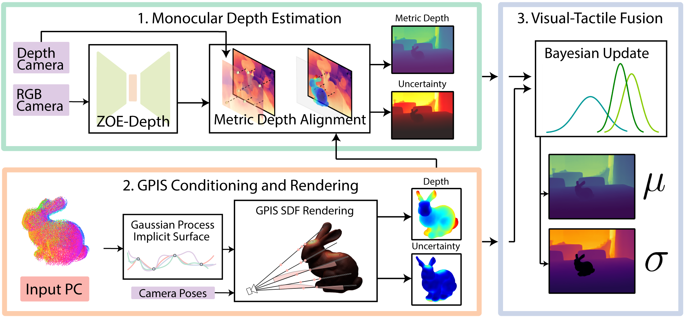

Our method leverages state-of-the-art monocular depth estimation and Gaussian Process Implicit Surfaces from touches along an object and optimally fuses them to train a Gaussian
Splatting model, or any other traditional NeRF. The monocular depth estimator gives us a coarse depth map, which we then align to real-world depths
with depth data from a noisy depth camera and further with our touch data. We then combine this with our Gaussian Process Implicit Surface, which provides a more finer depth map.
Finally, we can use a novel, uncertainty-weighted depth loss to train a NeRF on few view scenes, as well as mirrors and transparent objects, where vision alone fails.
